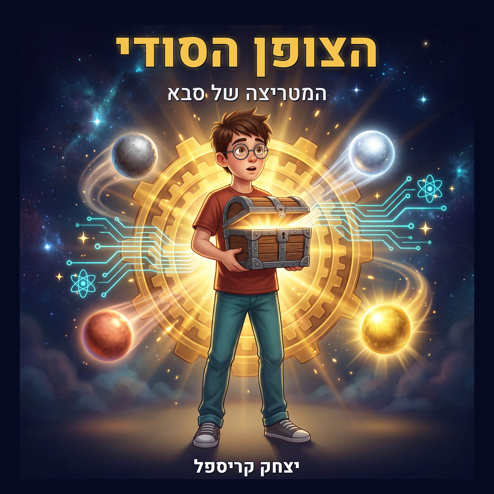

הצופן הסודי
"כל ההתחלות קשות, אבל אחר כך מעניין יותר" קוראים יקרים, הספר הזה נולד בשבילכם, והוא יישא אתכם למסע קסום בתוך המטריצה – אל סודות, צפנים וגילויים על העולם ועל המוח האנושי. בדרככם תעברו חוויות מרתקות כדי לעזור לדרור לפתח קוד ששמו "זיכרון חיים".
התאזרו בסבלנות ובתושייה, בצעו את המשימות לפי הסדר, ורשמו את התשובות בדף המצורף בסוף הספר. המסע הקסום מתחיל עכשיו...
המפתח הראשון · יסוד הברזל
דרור ישב בחדרו והביט במסך המרצד. המחשבות על סבא חיים והחידות שהכיר גרמו לו להתמודד.
הוא ידע שהזמן דוחק והקוד חייב להתגלות.
"דרורי, ארוחת הערב מוכנה!" קראה אימא רעות. קולה היה חם ונעים, מלא במסירות, אך דרור היה עמוק בתוך עולם המַטְרִיצָה.
אבא שלום נכנס לחדר, הניח יד על כתפו ואמר: "סבא תמיד אמר שהסוד נמצא על המדף שלו." הוא הושיט לדרור קופסת ברזל ישנה וכבדה.
"מה יש בפנים?" שאל דרור בסקרנות גדולה. "זו התחלה של דרך," ענה אבא בחיוך.
"הברזל הוא הבסיס, הכוח שמחזיק את הכול." דרור פתח את הקופסה ומצא בה דף מקומט, שעליו היו רשומים סימנים שנראו כמו קוד מוצפן.
"זה קוד לשוני," מלמל דרור, "המורָה ללשון תדע." הוא הבין שהמסע לא יהיה רק במחשב, אלא בכל מקום שהלב פועם והמוח חושב, ושהרמז הבא לפענוח מתחבא בבית הספר.
אימא רעות ואבא שלום הביטו בו בגאווה. הם ידעו שנכדו של חיים ימצא את התקווה.
"צא לדרך," אמרו לו, "ואל תשכח לנשום." דרור הכניס את הדף לתיק והתכונן למחר. הוא הצמיד את הטלפון אל הקוד המסתורי, כדי לצפות במעבדה במבט מהיר.
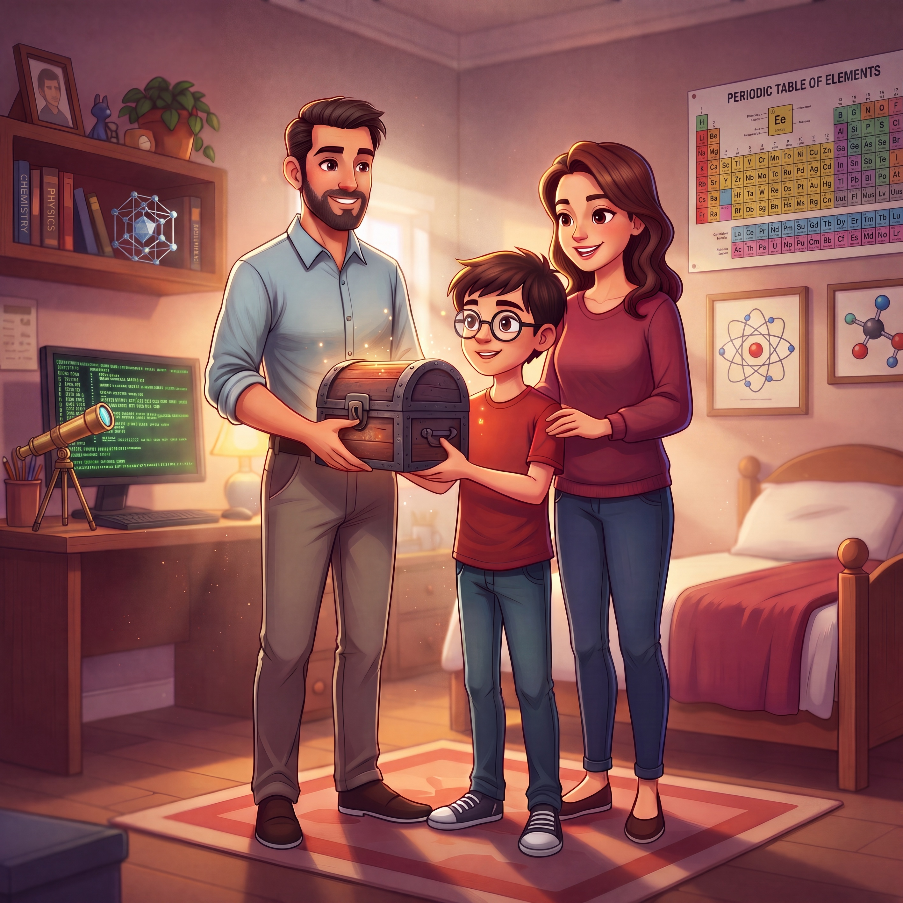
סוד המשפט המבלבל
דרור צעד במסדרון, וידיו רעדו מהתרגשות. הוא חיפש את המורָה ללשון בדריכות ובנחישות.
הקופסה של סבא חיים הייתה עמוק בתוך התיק.
המורה המתינה בכיתה, מביטה בחלון הגבוה: "דרור, ידעתי שתבוא, זה הזמן לבחון ולחקור." היא הושיטה לו דף ישן, סמוק מרוב שנים וזמן.
"המילים הן המפתח," לחשה המורה בחיוך רחב. "סבא שלך ידע שהלשון היא כמו אשכול וגפן." דרור הביט בדף וראה רצף מילים מפוזרות: הברזל / הזיכרון / בנפש / כמו / האדם / חזק / נשמר.
– הוא הבין שעליו לסדר את המילים בסדר הנכון, למצוא את ההיגיון שיפתח את דלת הדמיון.
המסר הסתתר שם, מחכה לְיד שתְחַבּר ותִבנה. דרור הוציא את העט וניגש למשימה הלשונית, הוא ידע שכל מילה היא לְבֵנָה בחומת התוכנית.
הוא חיפש את הנושא, את הנשוא ואת התיאור.
כשהמשפט היה מוכן, הוא חייך בהקלה גדולה, המילה הראשונה של המסר הייתה המטרה הסלולה. הוא רשם אותה על המטריצה, במקום המיועד והנכון.
דרור ראה את הגביש מסתדר; האטומים של הברזל יצרו רשת חדשה ומפוארת.
הוא היה מוכן לתחנה הבאה – המעבדה הבוערת.
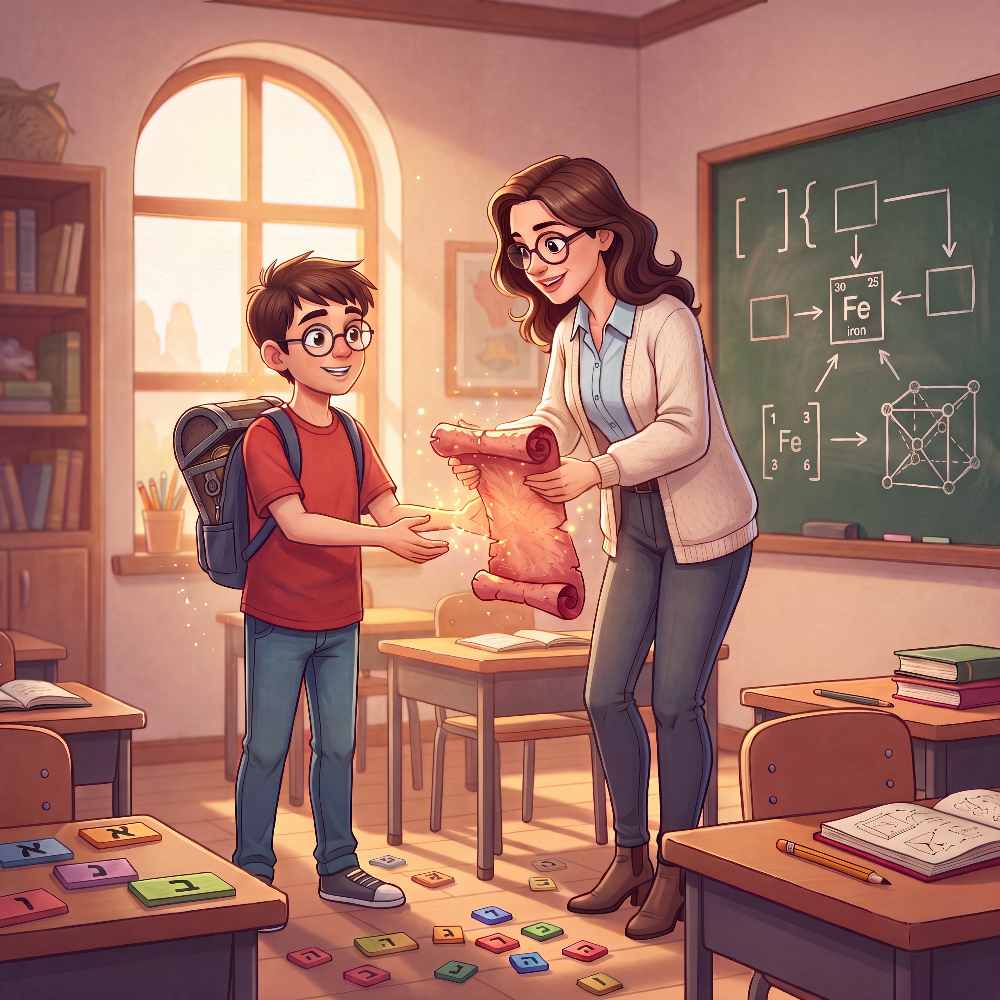
המבנה הנסתר של המתכת
דרור מיהר למעבדת המדעים. ריח של גופרית היה באוויר.
המורֶה למדעים הביט בו במבט חד ומאיר. "כדי להבין ברזל," אמר, "עליך לראות את הסדר." הוא הניח על השולחן דגם של קובייה משונה עם נקודות שמחוברות ברשת סבוכה ומרשימה.
"זהו הגביש, דרור, המבנה שנותן לחומר כוח. אטום הברזל מתגבש בצורה מדויקת וקבועה." המורה הצביע על הדגם שנראה כמו חידה קלועה.
"ספור את הקודקודים בקובייה הזו ומצא את הנתון." דרור הביט בקובייה המרחבית (Cube) שלפניו. הוא ידע שהמספר הזה הוא המפתח.
כמה קודקודים יש לקובייה אחת שלמה ומסודרת?
הוא נזכר בסבא חיים ובאהבתו לגאומטריה. המספר הזה היה השלב הבא בתאוריה.
הוא סָפַר בזהירות, קודקוד אחר קודקוד במבנה: ארבעה למעלה, ארבעה למטה – זהו המענה.
דרור חייך. הגביש הפך ממושג למשהו מוחשי.
הוא רשם את המספר על המטריצה.
"הברזל יציב," סיכם המורה וטפח על שכמו. "כשם שהגביש מסודר, כך על האדם לבנות את עצמו." דרור הרגיש שהמסע הופך לעמוק ומשמעותי.
האטומים הפכו לגביש מסודר.
הוא היה מוכן למצוא את הגוון והסימון המדעי של המתכת – הסוד הבא נמצא בספרייה.
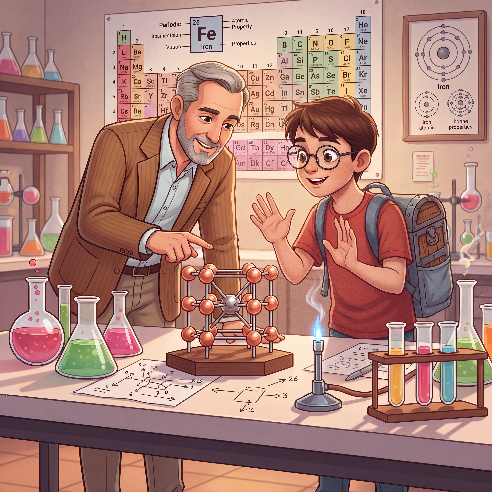
הזהות המתכתית והקוד המחזורי
דרור המשיך לספריית בית הספר וחיפש את הכרך המתאים. הסוד של המתכת היה צפוּן ולא נשכח.
הוא הביט בטבלה המחזורית שהייתה תלויה על קיר הספרייה.
המשבצת של הברזל זהרה באור בוהק. "Fe," לחש דרור, "Ferrum – זהו שמו העתיק." הוא חש שכוחו של הברזל מתגבר ומעמיק.
הוא הביט במספר האטומי שניצב שם בראש: עשרים ושישה אלקטרונים ומספר דומה של פרוטונים זהו מבנה יציב – אין ממה לחשוש. הוא מצא את המספר שמגדיר את הלב של החומר.
"כל אטום הוא עולם," אמר לו סבא בחלום. "הברזל הוא העמוד שמחזיק את המבנה." דרור הבין שהמספר 26 הוא מפתח חשוב.
הברזל מתצטבר עמוק באדמה ובמחצבים שבסלעים. הוא היה צריך למצוא את הצבע של המתכת.
"הברזל מכסיף כשהוא נקי," רשם לעצמו בטעות. לא, הוא מבהיק בצבע אפור־כסוף.
הוא רשם את הסמל "Fe" על המטריצה בחיוך נחוש.
היסוד הראשון כבר כמעט היה בידו הקטנה. דרור החל להבין את הקשר בין המדע לטכנולוגיה.
עוד שלב אחד והמפתח יהיה מוכן; עוד צעד אחד והכול יהיה מובן. הגביש נצבע באפור־מטלי וקר.
הוא היה מוכן למשקל הסגולי – הרמז המתוחכם.
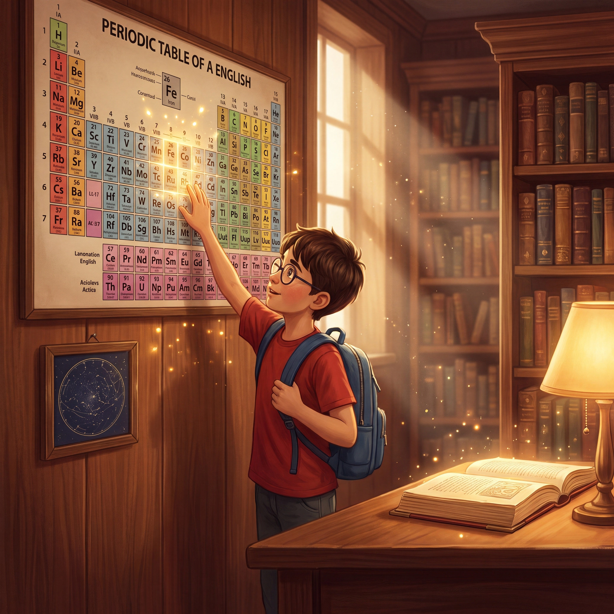
סוד המסה והמפתח הדיגיטלי
דרור ירד למרתף, ששם המאזניים הישנים עמדו. הוא הניח את גוש הברזל, והכפות התנדנדו.
"כמה כבד הוא הזיכרון?" שאל בקול שקט.
הוא מצא פתק שסבא הצמיד למשקולת הברזל. "הנפח הוא המקום, המסה היא הכמות." דרור הבין שעליו לחשב ולמצוא מספר חדש.
הוא טבל את הברזל במים ומדד את התזוזה. הנפח שנדחק גילה לו את סוד הכבידה.
"7.87," לחש דרור, "זהו המשקל הסגולי הנהדר." פתאום בשולי הדף הבהב קוד QR מֵאתר, דרור סרק אותו בנייד, וחלון הווטסאפ נפתח. "סבא חיים" הופיע בצ'אט, מחכה למילה החסרה.
הוא שלח את המילה "זיכרון" למספר שקפץ על המסך. "הברזל מאושר!" ענה הבוט במסר עקבי ומסתורי.
"עבור כעת לסוד הנחושת," נכתב עם חיוך רחב של אימוג׳י.
דרור הרגיש צמרמורת. סבא היה איתו במסע והטכנולוגיה הפכה לקשר אנושי שלא נשכח.
בלילה לפני השינה חשב לעצמו דרור – מדוע סבא חיים הכין עבורו סדרה של גילויים? האם יש למדע ולטכנולוגיה סוד וקשר למציאות ולחיים?
הוא היה מוכן לפרק הבא – יסוד הנחושת האדומה.
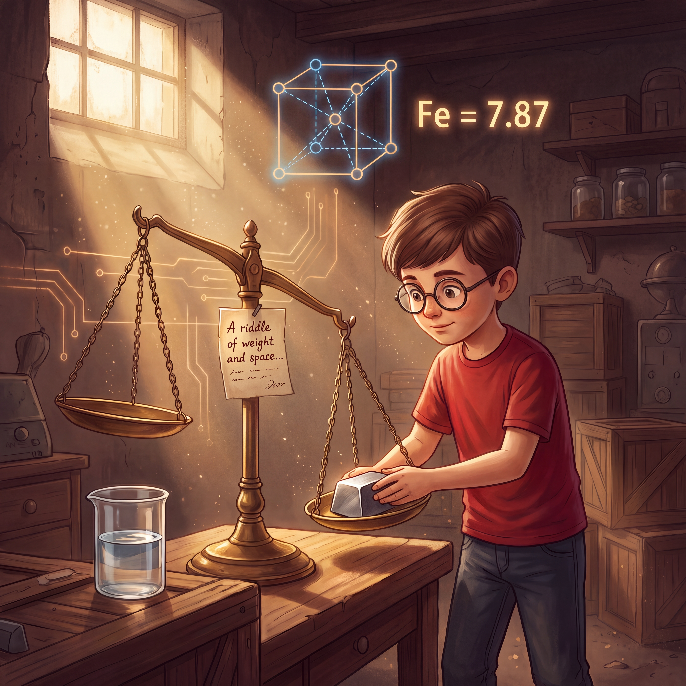
הגשר המוליך · יסוד הנחושת
דרור עלה מן המרתף, כשהמפתח הראשון בידו. הוא הביט במסך המאיר, מרגיש את הכוח לצידו.
הברזל היה רק הבסיס, השלד החזק והקשה.
הוא נכנס למטבח החם. שם אימא רעות הכינה תה בקנקן ישן מנחושת זוהרת, כמו שמש שמתחבאת בשדה.
הגוון האדום־כתום הבהב, הזכיר לו להבה של אש.
"זה הקנקן של סבתא חנה," אמרה אימא בקול רך. "היא תמיד אמרה שנחושת היא הגשר המבורך." דרור התקרב וראה על הידית חריטה עדינה.
פתאום המטריצה בטלפון החלה לרעוד ולפעום, אותיות חדשות הופיעו, מבקשות לדעת מה מקומן היום.
"הנחושת מוליכה את האור". נכתב שם בזוהר כתום.
אבא שלום נכנס בדלת, נושא כבלי חשמל דקים: "הכול מחובר בחוטי נחושת, מן העמודים ועד חברת החשמל." דרור הבין שהיסוד הזה הוא שמעביר את החום והזרם החשמלי.
הוא חשב על החופש של האש, על הזרם החשמלי שזורם ועל כך שהנחושת היא התנועה, הקשר שמתהווה וגורם. מן התקופה העתיקה ועד המחשב המתקדם.
"צא לחצר בית הספר," לחש אבא במבט נבון. "שם פסל הפעמון מסתיר את הרמז הנכון." דרור הצטייד בסורק קודים, מוכן לפענח עוד סוד.
היסוד השני המתין לו בחוץ, בחום הקופח – נחושת שמתחמצנת בשמש, מספרת על התחברות. הוא יצא אל הדרך החדשה, מלא בסקרנות.
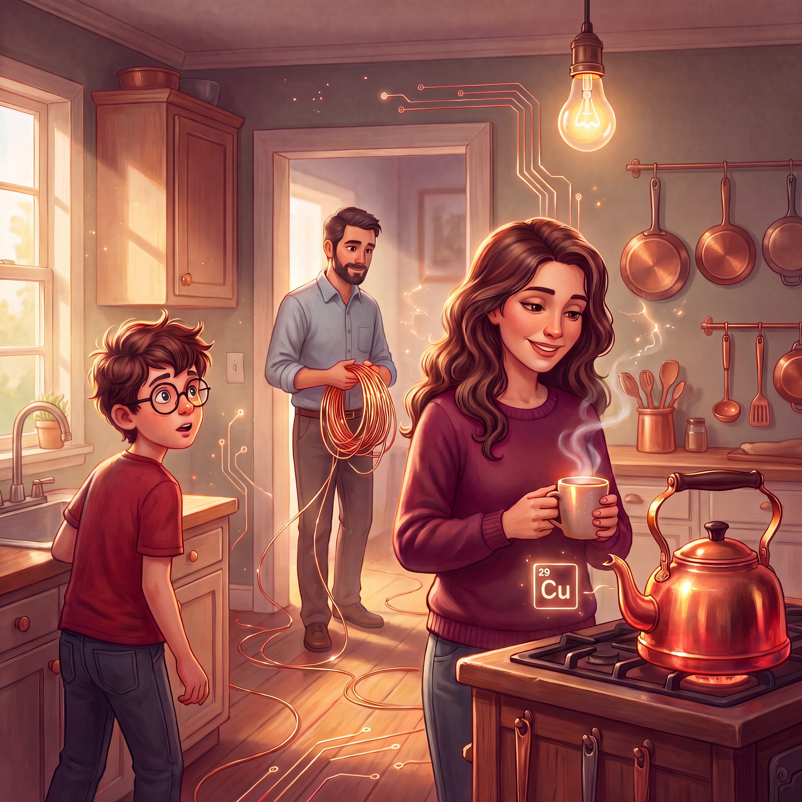
הפסל הירוק והזמן העתיק
דרור יצא לחצר בית הספר, השמש ליטפה את הכול. שם עמד פסל ברונזה עתיק, ירוק, כבד וגדול.
המורה להיסטוריה המתין במקום, נשען על המַסָּד.
"אתה רואה את הירוק הזה?" שאל המורה במבט חד. "זה החמצון של הנחושת, הזמן שחלף ונצרב בחומר." הוא הצביע על לוח מתכת קטן שהיה קבוע בבסיס.
"כדי לגלות את המילה הבאה, עליך להיות ממוקד," אמר המורה והושיט לו מטבע עתיק, אדום ומרשים. "הנחושת הייתה הכסף של העולם בימים הקדומים."
דרור הביט במטבע וראה חריטה של צמח הגפן, מתחתיו היו רשומות שלוש אותיות בכתב ישן ולא מובן. החידה של המורה הייתה טמונה בתוך ההקשר הזה.
"מהו שמה של התקופה שבה האדם למד להתנסות?" שאל המורה. "תקופה שנקראת על שם החומר שהיה נפוץ בעולם העתיק." דרור חשב על הזמן שבו הנחושת והברונזה שלטו.
הוא נזכר בסיפור ההיסטורי שבו העמים התפתחו, בתקופה שחיברה בין תקופת האבן לתקופת הברזל באופן כה יפה. הוא הבין שזהו השם שעליו לרשום, זה המענה.
דרור רשם את התשובה על המטריצה החדשה שלו. הוא ידע שהנחושת היא הגשר לזמן שעבר במסלולו.
הוא חייך אל המורה והמשיך לתחנה הבאה בסדר.
האטומים של הנחושת החלו להתחבר. החומר החדש נוצר, מוליך זרם חשמלי וחום שלא נגמר.
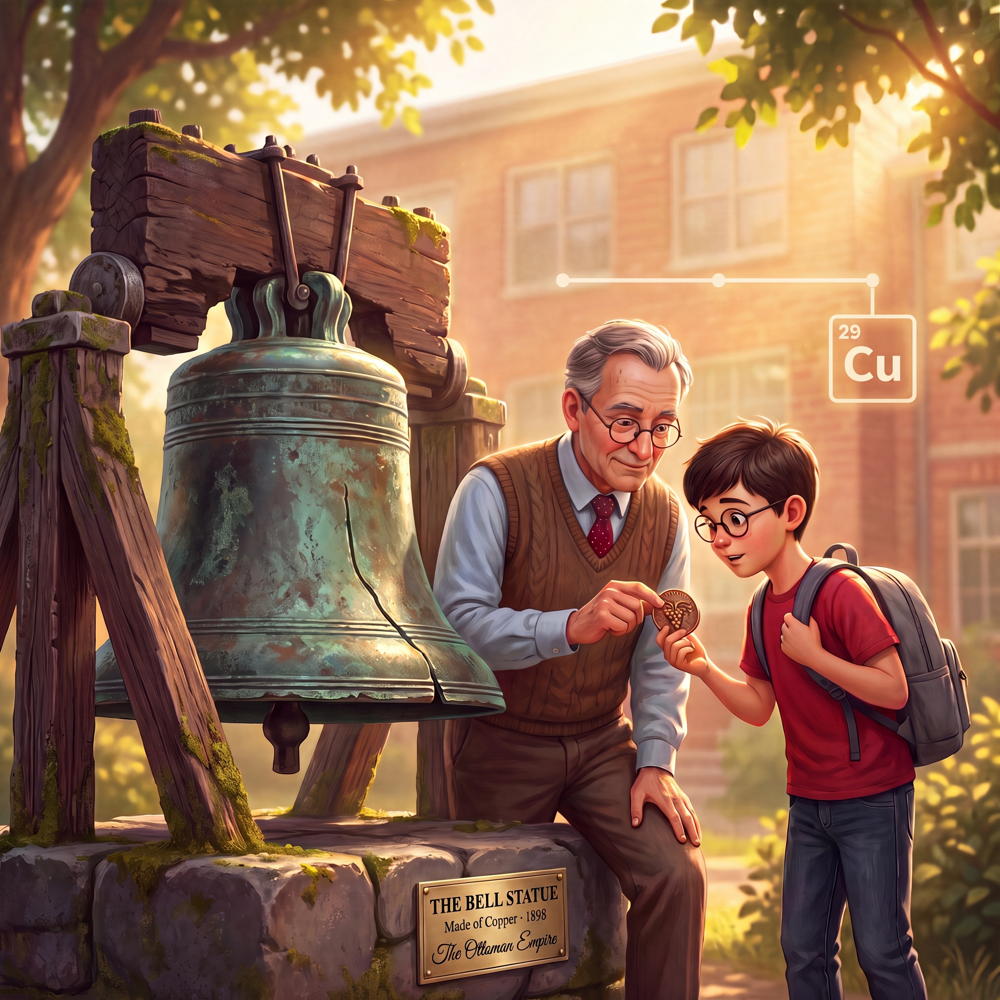
המוליכוּת המופלאה וסוד הגביש
דרור חזר למעבדה, שם המתין לו המורֶה למדעים. על השולחן נחה סוללה, ואור בוהק נצנץ.
"הנחושת היא הדרך המהירה," אמר המורה בְּחֵן.
הוא הראה לדרור את הגביש, שנראה כמו רשת צפופה. "כאן האלקטרונים נעים בחופשיות, בתנועה כה מהירה.
הגביש של הנחושת מסודר במבנה שנקרא 'ממורכז פָּנים'. בכל פאה של הקובייה יש אטום, כמו בימים כפי שגילו המדענים," המורה המשיך, "אך יש גם אטום במרכז כל דופן וקיר." דרור הביט בדגם, מנסה למצוא את המִספָּר המֵאיר.
לקובייה יש שש פנים, ובכל אחת מהן נמצא אטום. דרור סָפַר את הנקודות שזהרו בכתום ובאדום.
"זהו מספר הדְפָנות," לחש לעצמו בשקט.
הוא הבין שזהו הקוד שהמטריצה כעת מבקשת. המבנה הזה הוא שמאפשר לחשמל לזרום כמו חץ.
הוא רשם את המספר על דף, מרגיש את הזרם עובר.
"כשהאלקטרונים חופשיים, החום והאור מתחברים," סיכם המורה. "הנחושת אינה שומרת דבר לעצמה." דרור חשב על הנדיבות של החומר, על הנתינה החכמה.
הוא ידע שהחלק השני בפאזל המדעי כבר מוכן. הגביש התגבש בתוך המחשב, מדויק ומתוזמן.
הוא היה מוכן לתחנה הבאה – זהות המתכת.
דרור המשיך לספרייה כדי למצוא את שֵׁם המתכת באותיות לטיניות ואת המספרים המאפיינים אותה.
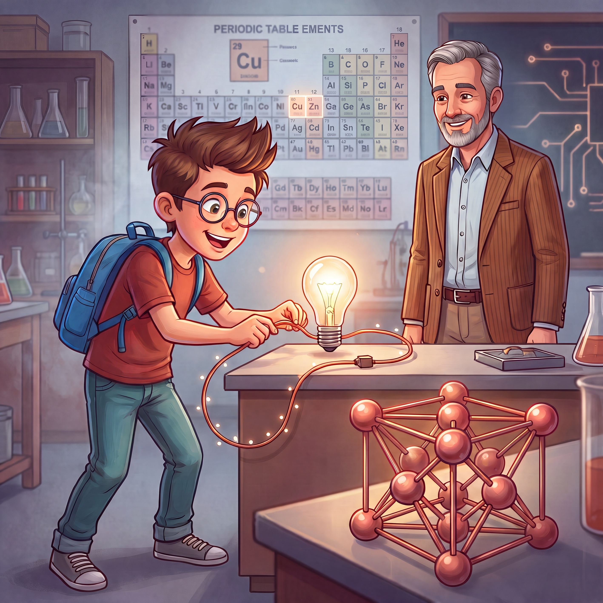
סוד המסה הדיגיטלית והקוד הנסתר
דרור הוציא את הטלפון. המצלמה נדלקה במהירות.
הוא סרק את לוח הנחושת בדיוק ובזהירות. פתאום על המסך החומר הפך למבנה של נתונים.
הרכיבים האלקטרוניים החלו לזרוח בפנים, והוא אמר בקול: "הנחושת היא הדרך שבה המידע עובר לשכנים." דרור ראה את זרם הנתונים פועם בתוך הקו.
על הצג נכתב: "כדי למצוא את המשקל הסגולי עליך לפתוח את הקובץ החסום והמוצפן." דרור הקליד את המספר האטומי 29 כסיסמה למעבד.
המסך הבהב בירוק וחשף את הנתון הנכבד: 8.96 – בהחלט מספר מיוחד. המסה של הנחושת כבדה מן הברזל בכל מעבד.
דרור רשם את הנתון 8.96 על המטריצה הזוהרת והבין שהטכנולוגיה והמדע הם שרשרת. היסוד השני הושלם, הגשר המוליך כבר בנוי.
הוא חש את החום של הנחושת בכיס, כמו רמז צפוי.
המפתח הבא יהיה מבהיק וכָסוּף כמו הלְבָנָה.
כעת היו לדרור שתי מתכות שיעזרו לו בעתיד לבנות ולהמציא המצאות.
זה המסע שסבא חיים רצה ללמד את דרור, אך המטרה הסודית עוד לא ברורה.
הוא היה מוכן ללמוד על הכסף – היסוד של ההשתקפות והבּינה.
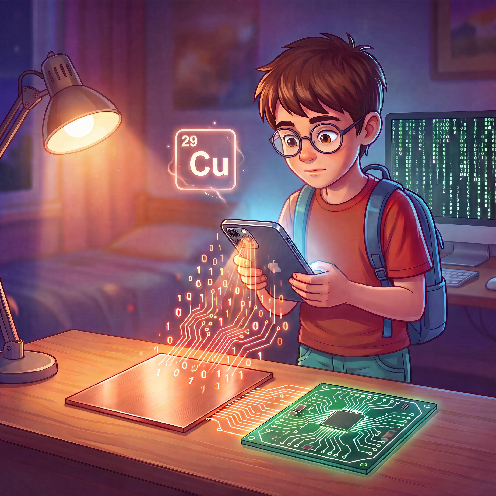
ההשתקפות הנקייה · יסוד הכסף
דרור הביט במטריצה; שני יסודות כבר האירו שם – הברזל והנחושת יצרו בסיס איתן ומפורסם. אך כעת, המסך הפך לבהיר, כמעט כמו מראה.
הוא נכנס לחדר של סבא, שם הכול נשאר במקומו. על המדף עמדה חנוכייה מכסף, מפיצה את הקסם שלו.
הניקיון של המתכת הזו היה מסנוור וטהור.
"הכסף הוא האמת." נזכר בקולו של סבא החכם. "הוא מחזיר את האור בדיוק, לא מחסיר דבר מהעולם." דרור הושיט יד ונגע במתכת הלבנה, הבוהקת והזכה.
פתאום הטלפון רטט, הווטסאפ שוב נפתח למרחב, התקבלה הודעה חדשה מסבא: "הבט דרך העדשה עכשיו. הכסף מסתיר דברים שהעין לא תראה במקרה." דרור הרים את המצלמה וכיוון אותה אל הדף הבא.
המסך החל לעבד נתונים, יוצר מציאות כה מופלאה. הוא ראה אטומים של כסף מרחפים מעל הנקודה.
"זהו יסוד המוליכוּת הגבוהה ביותר," נכתב בהודעה. "הוא מבהיק יותר מכל מתכת, כמו כוכב בגלקסיה." דרור הבין שהמסע הזה הופך לשיקוף של הנשמה.
הוא היה מוכן לפענח את סמל היופי והטוהר, הכסף יעזור לו לראות את הדרך ולמצוא את האור.
הוא צעד אל החידה הבאה, מלא בכוח רצון ובהתמדה.
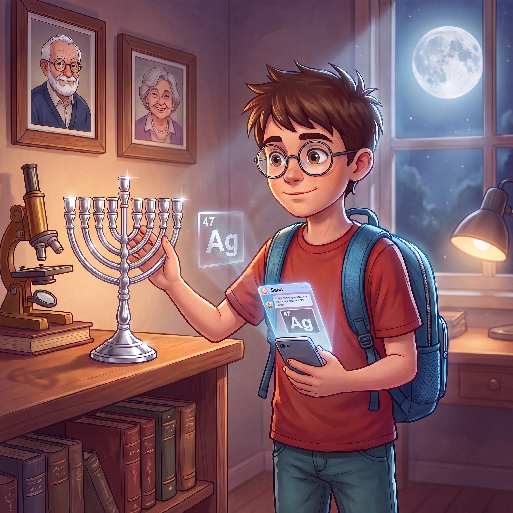
המטבע הלטיני וסוד הכסף
דרור הביט בחנוכייה וראה עליה חותם קטן. הוא פתח את הווטסאפ ושאל את הבוט המלומד: "מהו השם שהכסף נשא כבר לפני זמן רב?" התשובה הגיעה במהירות בקול צלול ומדהים: "חפש את המילה הלטינית שממנה נולד הסמל Ag, היא מספרת על הלבן הבוהק, על האור שמתפרץ."
דרור הקליד את האותיות על המטריצה הדיגיטלית שלו. הוא ידע שהשם Argentum הוא המפתח במסלולו.
המילה הזו נוצרה משם של ארץ דרומית ורחוקה – ארגנטינה.
הוא חשב על הכסף כעבר וכעתיד בשפה העברית, הן כמתכת יקרה והן מטבע עובר לסוחר, כוח שמניע את הכול בתכלית.
דרור רשם את השם וראה איך הכול מתחבר על הדף.
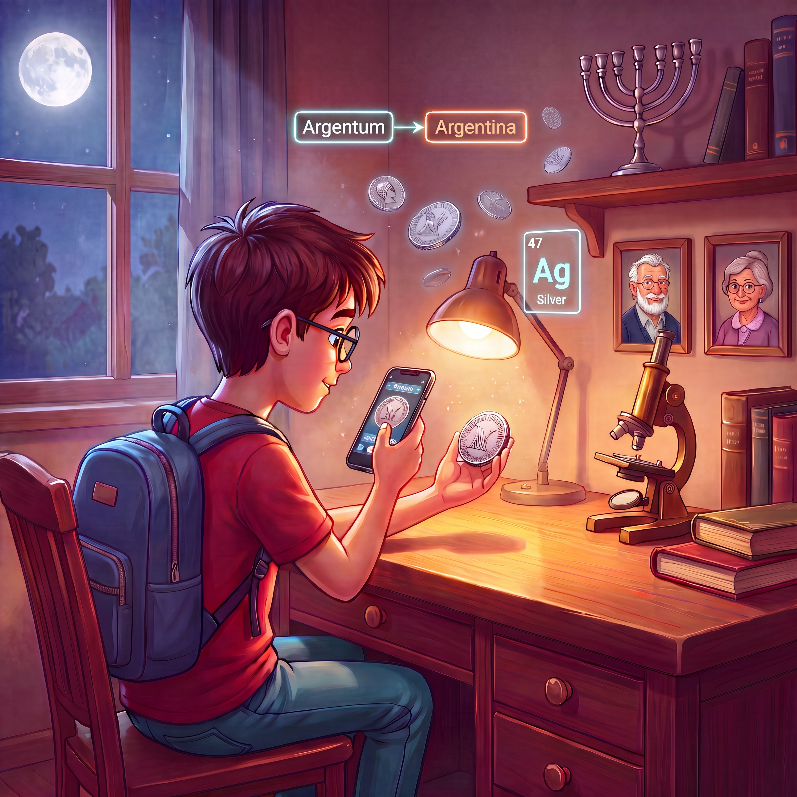
המוליך המושלם וסוד המבנה
דרור לומד ומתנסה בעולם המדע, במתכת שאין לה מתחרה, הכסף מעביר חשמל ללא מעצורים.
הוא פתח את הווטסאפ ושאל: "מה הופך אותו לנבחר?" "המבנה הגבישי שלו," ענה הבוט, "הוא סוד ההצלחה. כמו הנחושת, גם הוא מסודר בקובייה ממורכזת במתיחה."
דרור ראה על המסך אטומים שרוקדים בשמחה במבנה סימטרי ויפה. הוא הבין שכאן האלקטרונים נעים בחופשיות מוחלטת, ללא התנגדות, ללא עיכוב, בזרם שאינו נשלט.
הכסף הוא המלך של החום, המוליך המושלם, אך בגלל מחירו היקר, הנחושת זכתה בתחרות הצמודה להיות מובילה במעגלים האלקטרונים המודפסים במעבדה.
הוא רשם על המטריצה את הנתון המדעי המדויק, הכסף מעביר אנרגיה בצורה חלומית. הוא היה מוכן לגלות את הסמל שלו במדע דרך הטבלה המחזורית.
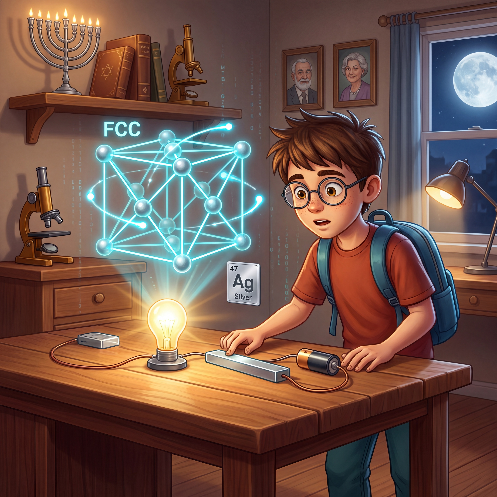
הסמל הלבן ומִספּר הבבואה
דרור הביט בטבלה המחזורית שעל המסך הדיגיטלי. הסמל Ag זהר בלא הרף.
הוא חיפש את המספר האטומי, הקוד הפנימי שלו.
"ארבעים ושבעה," לחש. "לכסף יש ארבעים ושבעה אלקטרונים בסדר הפנימי." הווטסאפ צפצף שוב: "הכסף הוא רקדן של אור ובבואה.
בעבר, לפני העידן הדיגיטלי, הוא יצר את התמונה השלמה." דרור נזכר במצלמות הישנות, בסרטים של פעם. מלחי הכסף היו אלו שלכדו את הרגע ואת הקסם על השקף, שדרכו נוצרה תמונה מצילום ישן על נייר.
היסוד הזה הוא הלבן הכי נקי שהטבע יכול לרקום.
הוא רשם את המספר 47 על המטריצה שלו בדיוק, מרגיש כיצד הכסף מחבר בין המדע לאומנות הצילום.
הדף הפך למבהיק וחלק, מוכן לנתון הבא בשורה.
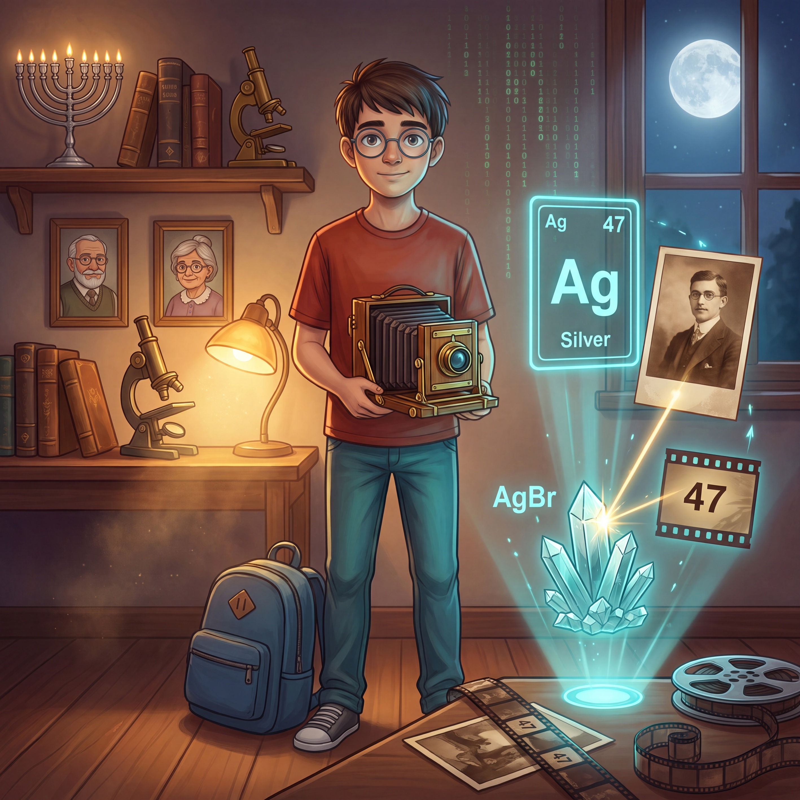
סוד ההשתקפות ומסת הטוהר
דרור הביט בחנוכייה והבין שהכסף כבד מן הנחושת. הוא הפעיל את המצלמה בחיפוש את זווית הצילום המתאימה.
הווטסאפ שלח לו קישור למסך חדשני של "מציאות רבודה". הוא כיוון את הטלפון אל המתכת, והמסך החל לרעוד – מספרים צפו באוויר, חשופים לעין שרוצה ללמוד.
"עשר נקודה ארבעים ותשע," קפץ הנתון מתוך הסוד. דרור הבין שזהו המשקל הסגולי של הכסף, הוא הקליד 10.49 על המטריצה, מרגיש את הקשר המדעי.
סבא כתב לו בהודעה האחרונה: "היסוד השלישי מבהיק וחלק באופן ממשי. הכסף הוא הראי.
עכשיו עליך למצוא את המלך, זה שאינו משנה תכונה."
סבא חיים אהב אתגרים. הוא ידע שצריך לחבר בין חומרים, מספרים, תושייה ואתגרים, כך רצה להנחיל לדרור כלים מְשַׁנֵּי חיים.
הוא ידע את הסוד שהעתיד הטכנולוגי חייב לעבור לדורות הבאים.
דרור ידע שהיסוד הבא הוא הזהב – התחנה של המתכת האצילה.
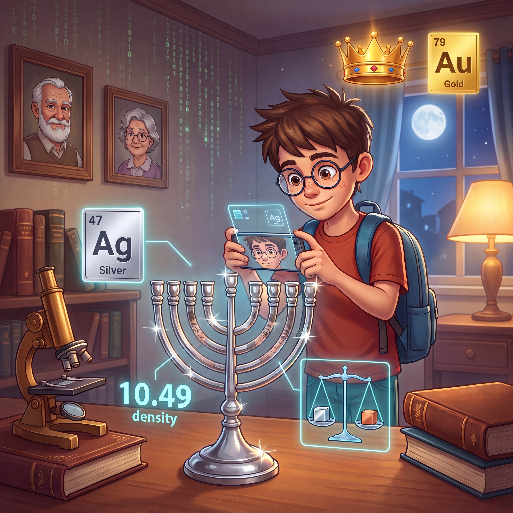
המסע אל המכון · יסוד הזהב
המכונית העמוסה עשתה את דרכה אל הרי הגליל הגבוהים. המשפחה יצאה לטיול בין נופים ירוקים ופרחים מזהיבים, אך דרור ידע שהיעד אינו מלון, אלא מכון חקר המוח המסתורי.
"סבא צריך בדיקות," אמרה אימא בקול קצת חרישי. דרור הביט בסבא חיים, שחייך אליו חיוך מרוחק ואישי.
הוא הבין שהזיכרון של סבא נעלם, נמס כמו קרח בשמש החמה.
בידו החזיק את המטריצה – הטכנולוגיה שנותרה בו כנחמה. "הזהב הוא התחנה האחרונה," הרהר בזמן שהנסיעה התקדמה.
כשהגיעו למכון המחקר, הוא ראה מכשירים מיוחדים. הוואטסאפ רטט בכיסו: "כאן נמצא הקוד שיחזיר את הטוב.
חפש את החומר שאינו מחליד, זה שנשאר קבוע ויציב."
דרור הבין שהתגלית של סבא מחכה לו בין הקירות הקרים. הוא נכנס למעבדה בזמן שהמשפחה נחה בין החדרים.
הזהב היה שם בתוך השבבים הזעירים של המחשב המדהים.
הוא היה מוכן לפתוח את השער לכספת שמעבר למילים.
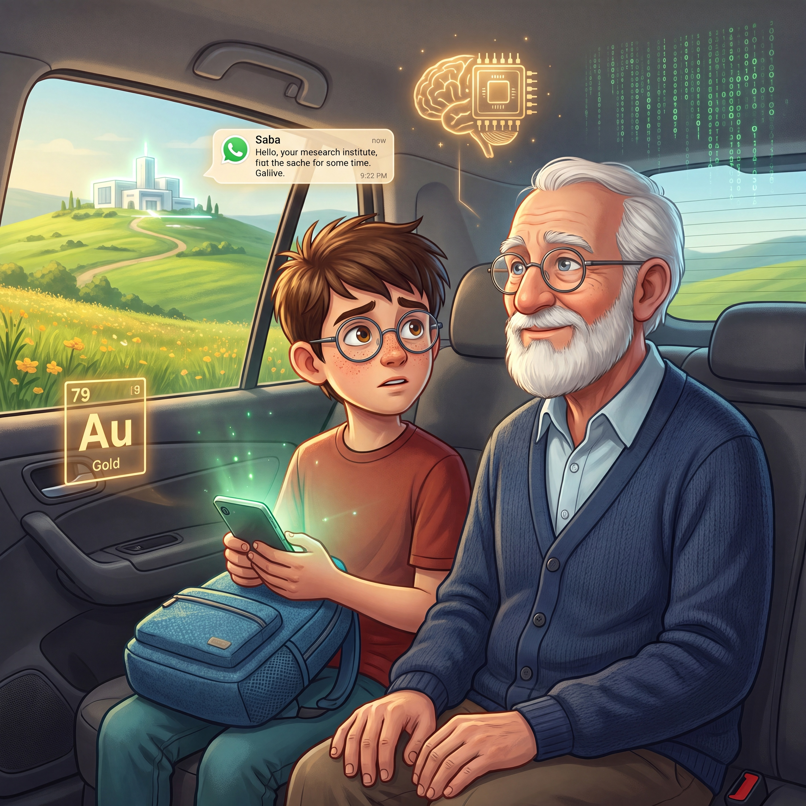
המבנה הגמיש וסוד הריקוע
דרור הביט בזהב הנקי, המתכת הרכה והגמישה. הוא פתח את הצ'אט בנייד, והבוט שלח לו תחושה: "את הזהב הגמיש ניתן לרדד לעלה דק משערה, ללא חשש."
"מהו המבנה שמסתיר את הכוח הזה?" דרור חקר את הגביש, את המבנה הקובייתי המושלם. הוא הבין שגם המוח של סבא היה כזה – גמיש, ואז נעלם.
הוא רשם על המטריצה את המבנה שמחזיק את הכול: FCC (קובייה ממורכזת פָּנים), כך הזהב בנוי. הוא הרגיש איך הפאזל נשלם, והמפתח משאיר חותם.
המסע היה עמוק. מתוך המבנה צפו הזיכרונות.
הזהב לא נשבר, הוא רק משנה צורה ונשאר לדורות. דרור ידע שהוא קרוב לסוף, שבו יגלה את התובנות.
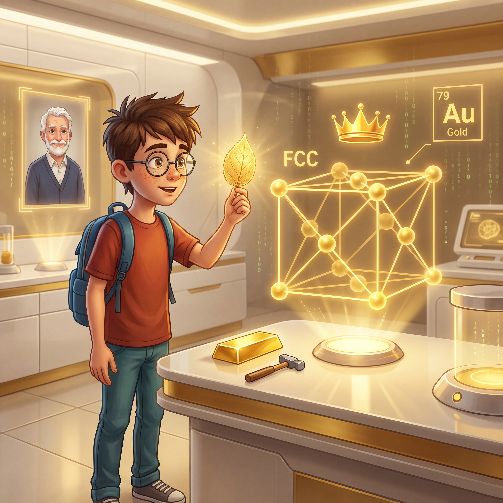
הסמל הנצחי ומספר הזיכרון
דרור הביט במסך של מכשיר צילום ענק ומשוכלל. הוא ראה את הזהב מאיר בחיישנים, מגן על המוח מכל נזק.
"79 אלקטרונים," לחש. "זהו המספר שאינו נמחק בטבלה המחזורית." הווטסאפ רטט, והודעה מסבא הופיעה כמו תמיד בזמן: "הזהב אינו מחליד, דרור, הוא נשאר טהור בכל זמן.
גם כשהזיכרון שלי נחלש, הידע שלך יהיה לבסיס איתן."
דרור הבין שזו התגלית: זהב בשבבים שמחזקים את המחשבה, טכנולוגיה שתעזור לסבא ולכל מי שאיבד את הזיכרון וכוח המחשבה.
הוא רשם את המספר 79 על המטריצה, ועינו נרטבה מדמעה. הוא ידע שהקוד הזה הוא יותר ממספר אטומי פשוט, זהו השער לכספת, לתגלית שתמנע את הטשטוש והטעות.
ברגעים אלו שסבא שוכב על מיטת המכון, דרור יודע שסבא שלו מאבד את הזיכרון ובליבו נולד חזון!
יום יבוא והוא יהפוך למדען שימצא את הפתרון למחלה זו. הוא ירפא את סבא ויסייע לאנושות למצוא מרפא לשכחה.
הוא הבין שהוא צריך להמשיך את מפעל החיים של סבא – מזיכרון אבוד לזיכרון חיים.
הכול מוכן לרגע הנכון – למשקל הסגולי האחרון ולפריצה הגורלית.
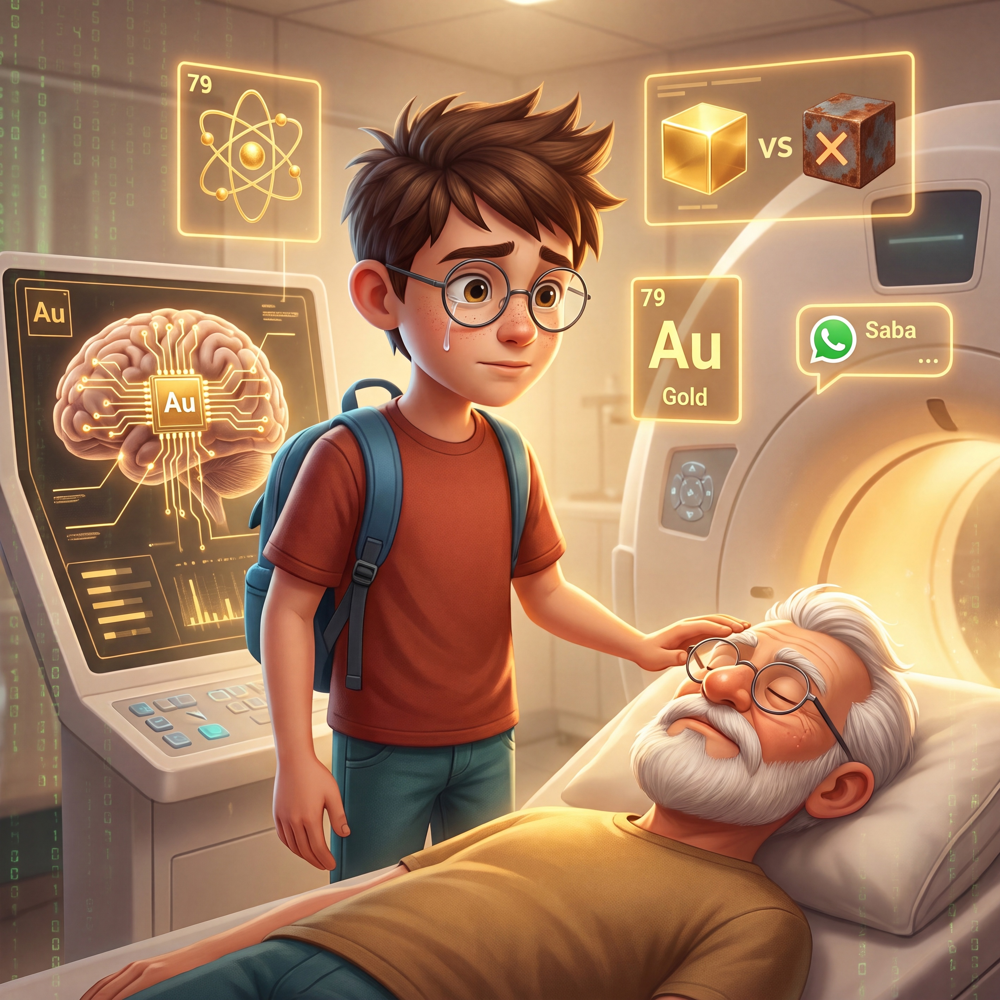
תור הזהב - השער האחרון
הוא קיבל קישור לאתר הכספת
www.sabahaim.co.il

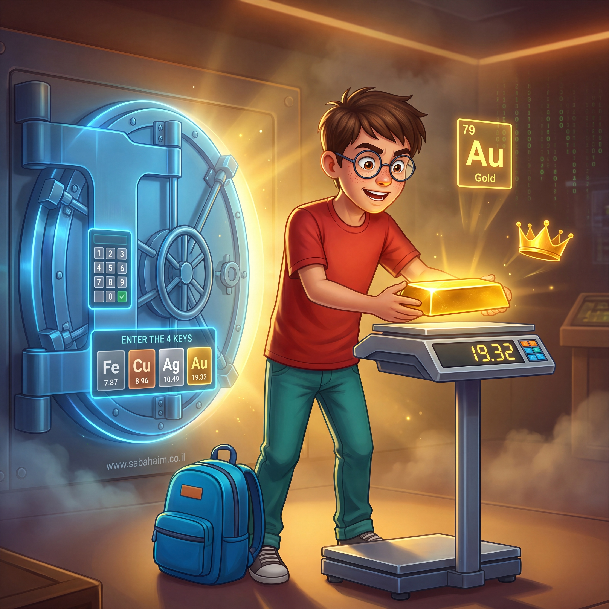
פריצת הכספת
על המסך הופיעה דלת פלדה, נעולה ואטומה.
"הקלד את ארבעת המפתחות," נכתב בהודעה ברורה.
דרור הקליד ברעדה את רצף המשקלים הסגוליים שאסף בדרך:
ברזל, נחושת, כסף, זהב.
צליל של מנעול נפתח הדהד, והדלת נעה באיטיות.
בפנים חיכה הגביע הדיגיטלי: התגלית לחיבור המוח, שבב הזהב שישמור את זיכרונו וייתן לו כוח.
דרור ידע שהוא צריך להשתמש במדע חדש כדי לשכלל את השבב.
הוא חייך – המדע והאהבה הצליחו לנצח.
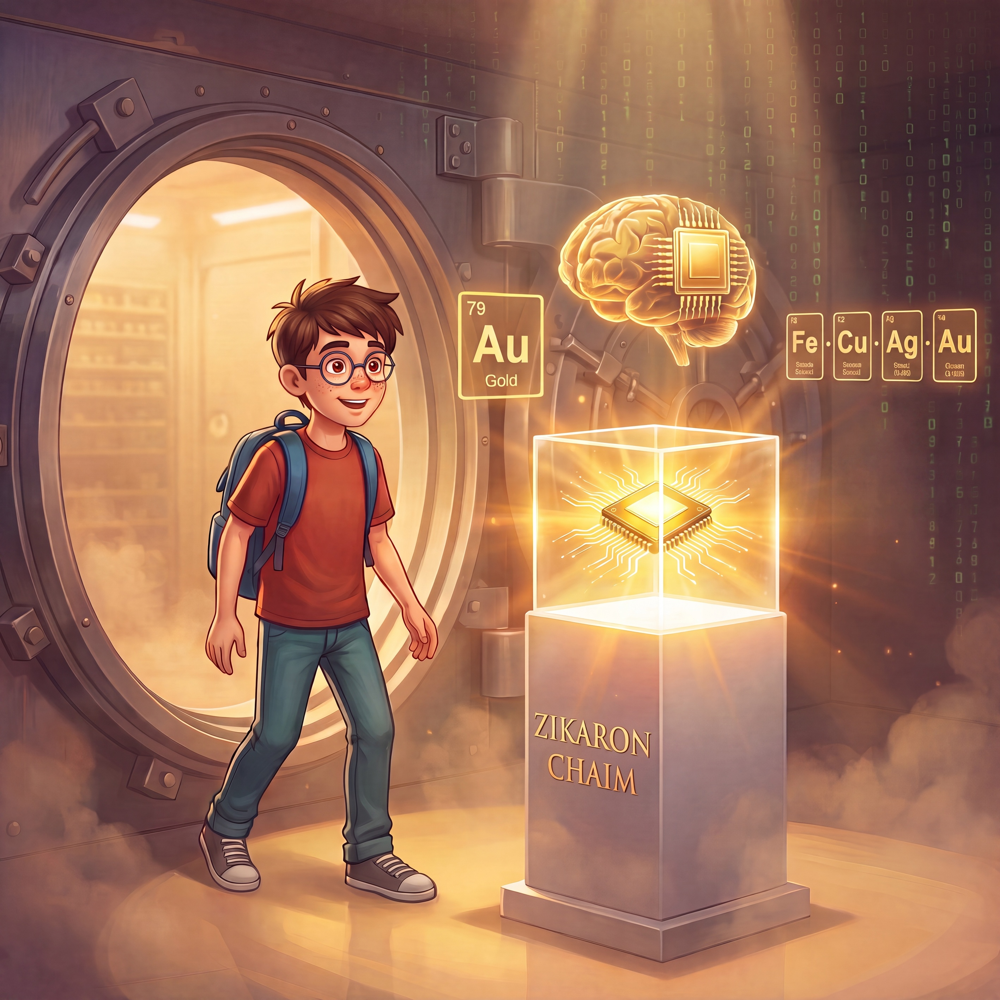
המחלה והמטרה
סבא חיים חלה באלצהיימר, מחלה שמוחקת את הזיכרון כמו דיו שמתאדה.
הוא תכנן ובנה לדרור סדרה של גילויים כדי לאמן את מוחו לחשוב כמדען, אך גם לוודא שיהיה לו הידע לשפר את השבב, להמשיך את המרוץ שסבא אולי לא יספיק לסיים בחייו.
סבא חיים, במוחו המתנוון, ראה את עתיד המדע בנכדו. הוא רצה שדרור יהיה הדור הבא שישלב בין שבבים, בינה מלאכותית ורפואה.
הוא רצה שחלומו יתגשם, מבלי לדעת שדרור כבר הגה את החלום הזה כשהיה במכון.
יום יבוא וחלומותיהם ייפגשו.
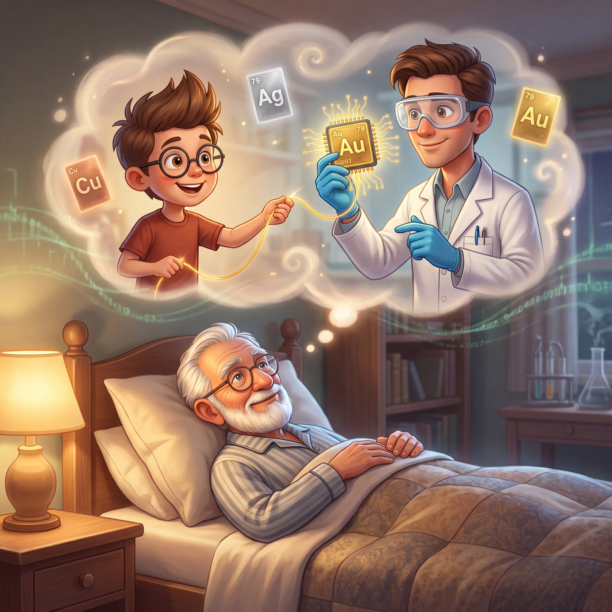
התגלית – ״הגביע הקדוש״
בכספת נחשף פיתוח טכנולוגי מדהים: "שבב הזהב המוליך".
זוהי מערכת עצבית מלאכותית שמשתמשת בתכונות של היסודות (הברזל – למבנה, הנחושת – לחשמל, הכסף – לדיוק והזהב – לעמידות) כדי לגשר בין שרירי מוח פגומים באמצעות חיבור עצבי לפולסים של חשמל מבוּקר.
סבא המציא גרסה ראשונה לשיטת מרפא המשלבת טכנולוגיה למחלת השיחכה, אבל היא צריכה שדרוג נוסף כדי להציל את האנושות.
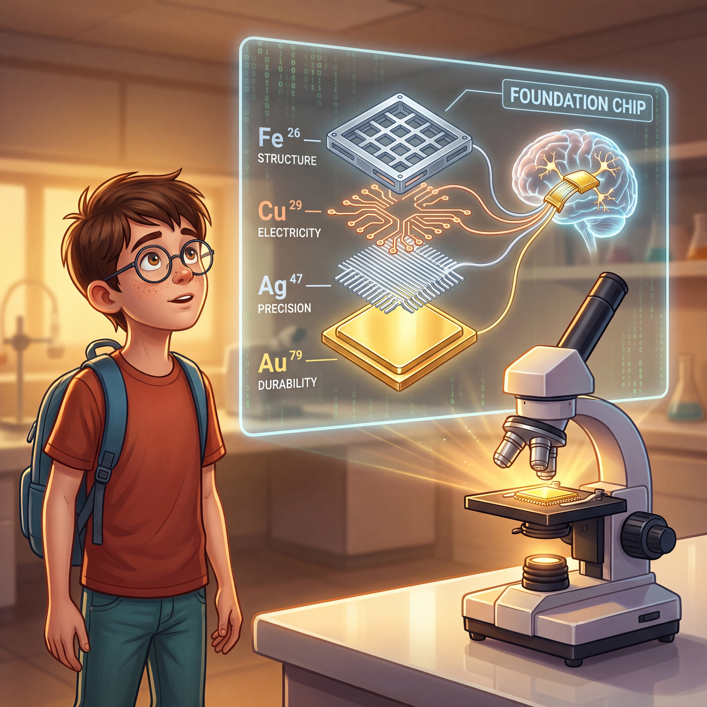
המכתב מתוך הכספת: הזיכרון שלא יימחק
דרור יקר שלי, נכד אהוב ומדען צעיר, אם פתחת את הדלת הזו, זה סימן שהיית זהיר.
המחלה בראשי היא כמו חלודה שאוכלת את הברזל, היא משבשת את הזרם, הופכת את הזיכרון לצל.
המטריצה הייתה הדרך שלי לאמן את מוחך המופלא, כדי שתמשיך את המחקר שבו התחלתי, ללא הפסקה.
השבב שבכספת הוא התגלית: גשר של זהב ונחושת, ברזל וכסף, שיחזיר לאנשים את העבר המפואר וייתן תקווה לעתיד מואר.
אני יודע שתלמד באוניברסיטה על ננו־טכנולוגיה וחומר, כדי לבנות מציאות חדשה שבה השכחה נעצרת.
גם כשאשכח מי אני, ואולי גם מי אתה, בעומקי אדע שהזיכרון שלי חי בתוכך, באופן מדעי, מושלם וחיוני.
אוהב לנצח, סבא חיים
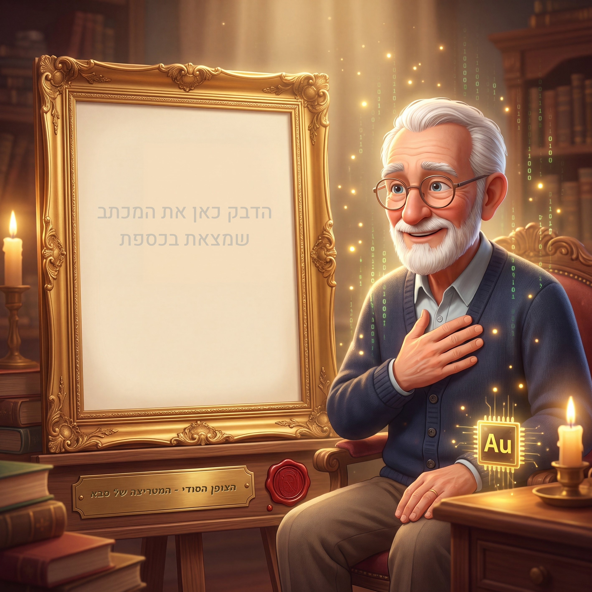
הלימודים של דרור
שנים חלפו והזיכרונות התגבשו.
בזכות המסע, דרור למד באוניברסיטה הנדסת חומרים וננו־טכנולוגיה. הוא בחר בתחום הזה כדי שיוכל לממש את הפטנט שסבא השאיר לו – להפוך את הטכנולוגיה שסבא התחיל למוצר עבור מיליוני אנשים הסובלים מאותה מחלה.
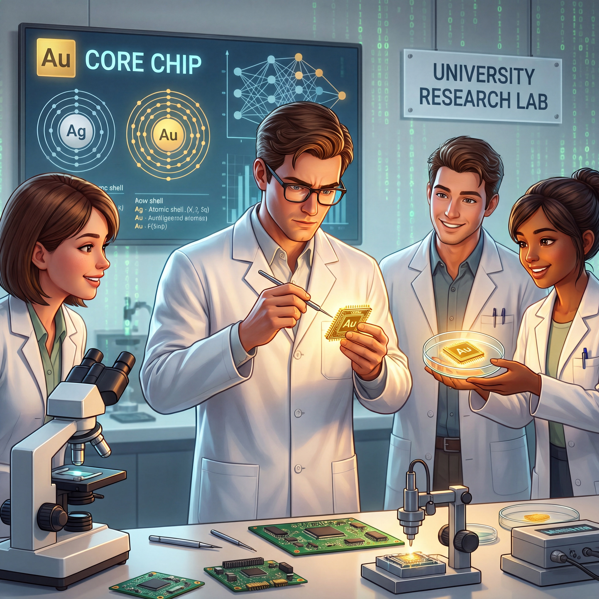
הסוף המרגש
דרור, המדען הצעיר, בא לבקר את סבא במכון. סבא אולי כבר לא זוכר את המטריצה, אך כאשר דרור מראה לו את שבב הזהב שייצר, ניצוץ של הבנה נדלק בעיניו.
מעגל החיים עלה לשניהם כזיכרון משותף על המסע שעברו יחד.
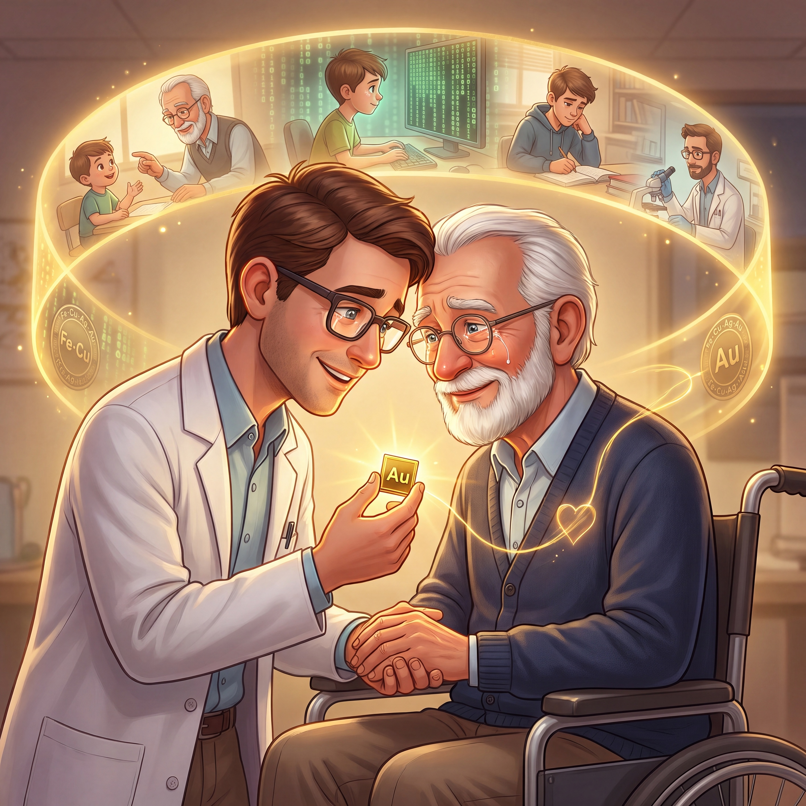
סוף דבר: הניצחון של דרור
ימים חלפו ודרור סיים את לימודיו, הוא מפתח את "שבב הליבה" ומצליח לעצור את התדרדרות המחלה אצל סבא. ובעיקר – הוא מבין שהזהב האמיתי הוא הקשר שנוצר ביניהם דרך החידות.
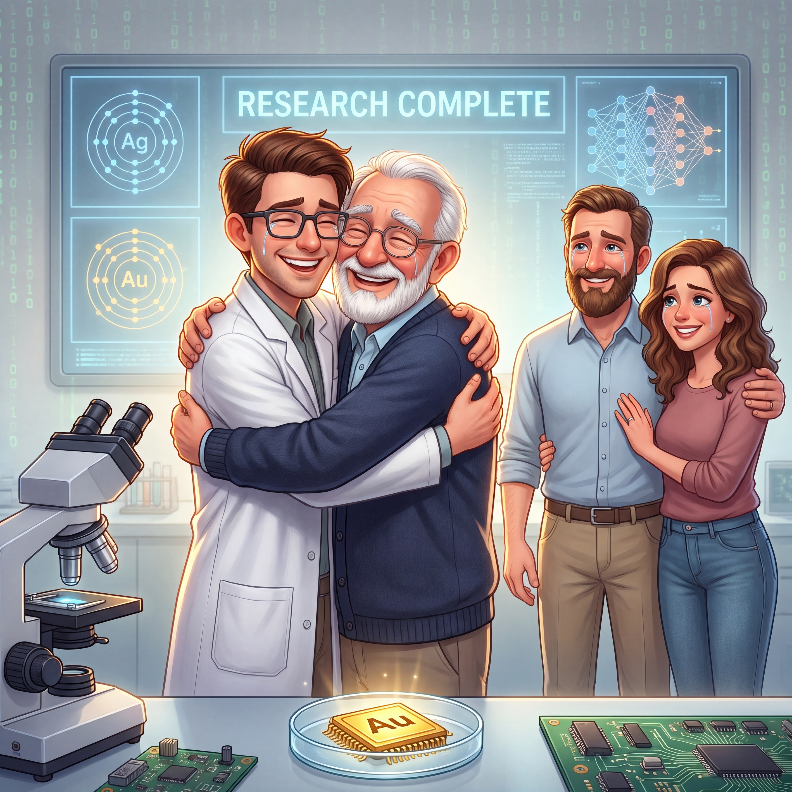
המעמד הנשגב: פרס נובל ו"זיכרון חיים"
שנים חלפו ודרור ניצב על בימת האולם של טקס פרסי נובל הנערך מדי שנה בעיר שטוקהולם בשוודיה. מול קהל מריע ונפעם הוא החזיק בידו את מדליית הזהב המבהיקה מכל דבר בעולם.
"הפרס הזה," אמר בקול רועד, "שייך לאדם אחד – סבא חיים, שמעולם לא ויתר וחתר לתיקון עולם, העולם שלו והעולם שמסביבו. הוא היה המדען שלימד אותי שכימיה וטכנולוגיה הן שפה של יצירה ואהבה.
בזכות החידות והמטריצה שלו פיתחתי את השבב שמניע את התקווה לעתיד טוב יותר.
קראתי לשבב 'זיכרון חיים', כיוון שהוא מחבר בין המוח ללב ומחזיר לאדם את החיים בחזרה."
דרור הביט בשורה הראשונה, ששם ישב סבא, חלש אך עיניו מאירות. בזכות השבב שהושתל בו, הוא זכה לראות את נכדו קוטף את הפירות ומגיע לגדולות.
הזהב, הכסף, הנחושת והברזל הם היסודות שעליהם נבנתה התקווה לתת מזור לאנשים, בעזרת טכנולוגיה וטיפול פורצי גבולות ההופכים את החומר לחיים חדשים.
הקהל הנרגש הריע, סבא חיים ידע...
המעגל נסגר.
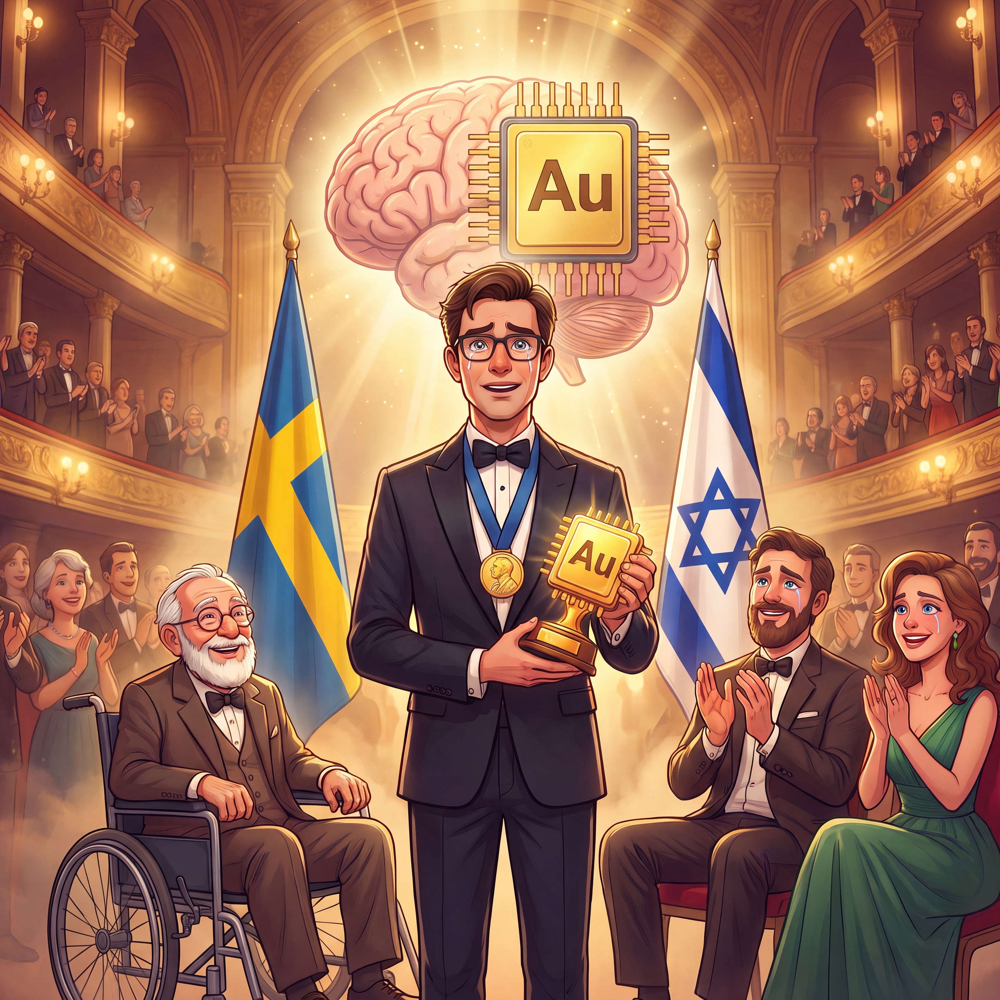
זהות היסודות
| יסוד | סמל | מס' אטומי | משקל סגולי |
|---|---|---|---|
| ברזל | Fe | 26 | 7.87 |
| נחושת | Cu | 29 | 8.96 |
| כסף | Ag | 47 | 10.49 |
| זהב | Au | 79 | 19.32 |
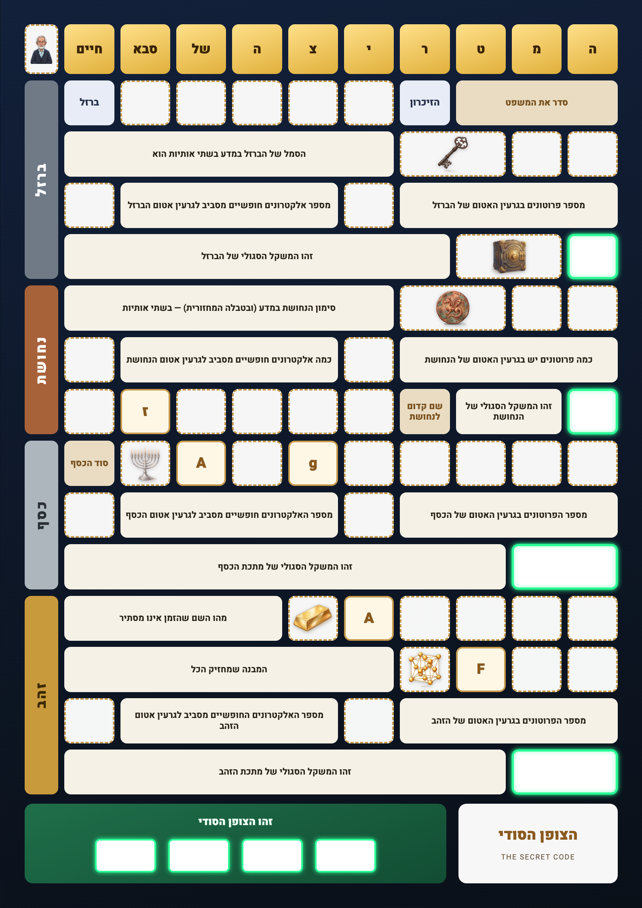
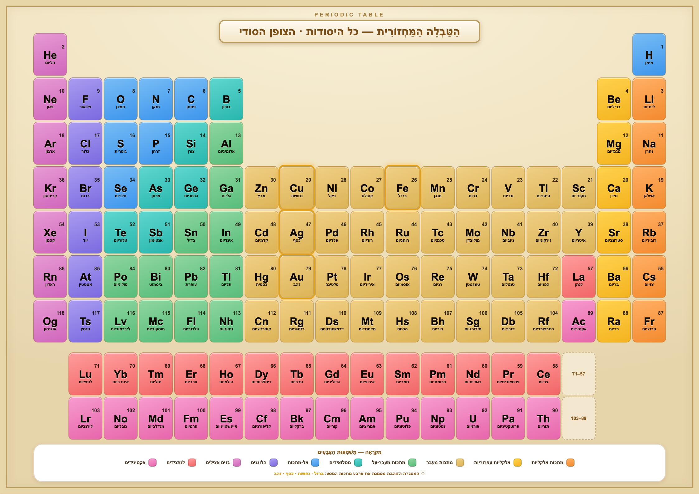
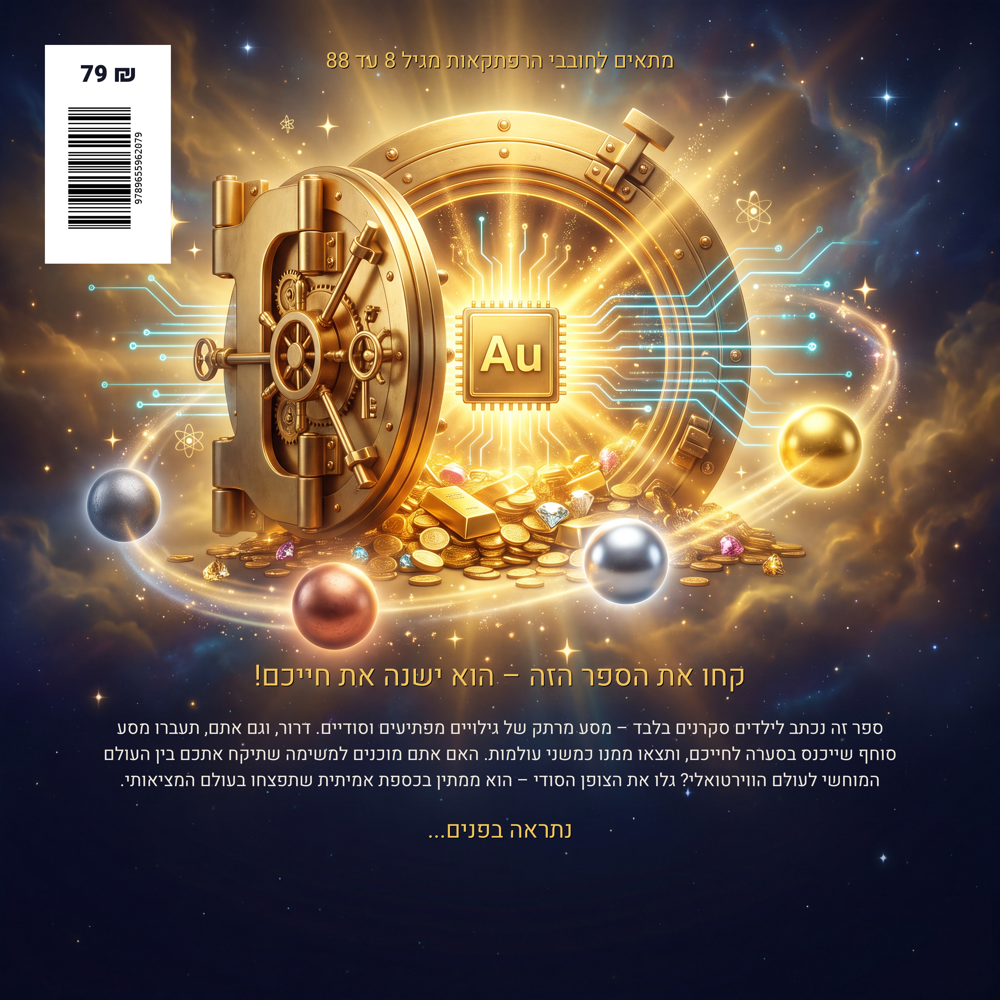